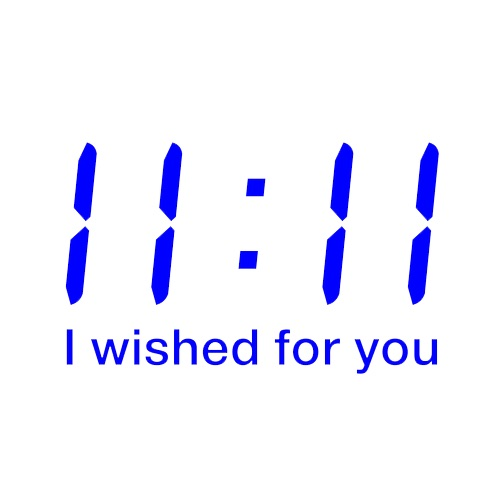

a number of propositions (11, or infinite) for fabulation

⛶. Fabulation always emerges in and with sparks, des éclats or what Adam Wolfond describes as the "blast of the whole... forging like a mass inside my eyes.”: pops, there are pops everywhere, in front of us, we only need to learn to see them. Fabulation is without a doubt immediate, the forces in-forming and their inflections. It thrives in and generates more appetite, always more. Appetition. Activation. ~ More life, now!
Becoming pop is when the whole so-called insides of a bodying burst out from the body in a rushed plop and at the same time, get uncontained and try with all the machines to pretend containment not truly for others but mostly for the operation’s sake. Like when in the middle of reading or in the middle of walking or let’s say in the middle of wandering, ‘something’ crosses, the suggestion of a universe flashes itself out and bathes the whole fielding into a non-end-non-beginning plane that swallows it all, provoking the inevitable involuntary burst, in the feeling of burst, uncontainment becomes irresistible for itself and pushes at great speed in order to reach and join the rays of the overtaken field. Like when a bite of a mango invades all experience and leaves room for nothing else or like when a ray of purpleness cuts through the gut of the universe and swallows perception into no-longer perceptibility but mere feeling lives.
⛶. Intercessors, always intercessors are needed. Everything can become an intercessor, the tiniest mode of existence can bring about the biggest (huge!) shift. Intercessors are needed for creation. The filmmaker can be the intercessor for a people to come, but at the same time the people can be an intercessor for a film to come; and the fish can be an intercessor for an emergent collectivity, while the pink paint can be the intercessor for another world. Intercessor keep the field, the invisible forces in play, in play with all the tendencies (as virtual poles) that enter the event, making them mix without confusing them (Massumi 2014: 62). Like how the nip is play and fight at the same time, or like walking out with slippers in the morning at night.
A glaze of infinite orange metal enamel cup sparks all experience, inflecting (reflecting forward, as Bateson would say) novel universes in its wake
⛶. The people are missing. Fabulation always tends to a people to come. Don’t you see? It is always a matter of survival, it is where minor socialities continuously create new spaces, however strange. Not those actual spaces, but the fields, zones, and planes that make life living possible in the first place; all those spazzes where other modes of existence become more real, more intense. This is the adventure of ideas Whitehead speaks of.
⛶. Fabulation populates in always tending to the minor. It concerns the population of fields, zones, planes with virtual modes of existence. “It is just that there is not a single mode of existence for all the beings that pop-ulate the world.” (Lapoujade xx) If fabulation ‘fills’ by populating, it does so in the exceeding sense of the more than: it welters, spills, and leaks because its filling is not so much the content but what exceeds it. That splash of soup that went out of the pot.
⛶. Fabulation moves with creatures, that is, tiny creations that come to move on themselves. These tiny creations can vary from conceptual persona to aesthetic figures to observers, and go across concepts, sensations, and functions. A bit like what Blanchot said about Nietzsche, “a nearly infinite capacity for precise ideas that were separate and rigorously formulable, each of them alive in the manner of a tiny organism.” (xx) Tiny organisms as creations, that is fabulatory in pop populating, whatever shape they may take. They are all alive in spirit -- abstractions are very living!! they are intensificators, operators of the virtual.
⛶. Fabulation is fully perspectival, that is, straddling different worlds. Yet all these worlds compose a world, not ‘this world’ for this world might just have to end -- more so “one world in relation”. Fabulation then ‘sustains’ not by making one world more consistent or more coherent, but by thriving between an ever increasing plurality of worlds. A life always emerges between, across the thresholds that mark these differing worlds. Sustenance seen in this way is what Whitehead calls “the becoming of continuity” (PR: 53-4)
⛶. Fabulation is speculative, yet fully material. It is always in practice: fabulation is in practice as much as it is of technicity, moving in the intervals of experience, across. It always involves shifts between modes of existence. Its shifting, its inflecting, resists any predetermination, any preordained capture - fabulation catches, but only to relay onwards. Sideways imagination, perhaps. Then It is not so much the imagination of something, nor the intending to something, rather it is felt at the edges, co-composing with existence. Perhaps fabulation is imagination in the Spinozean sense, but never is it a faculty of Reason or a product of intention which ends being all too human.
Becoming fab is attuning to something you don’t know exactly yet can attune by moving sideways. Like when tr(a)ying to reach something that falls behind the fridge. Something falls behind the fridge.
⛶. Dreaming without a dreamer might be the best approximation of the practice of fabulation, or of what is its crystalline milieux. The Dream is nothing but the sustenance of this practice. Dreaming becomes the groundless ground for any practice, while fabulation is the play that moves between the forces and what takes form. As practice, fabulation cuts across the disciplines we have come to know as art, philosophy, and science. Even in the moments it gets captured the most, the moments that arrest the movement of immanence, those moments that create a world entirely split, parsing out so much Life, even therein fabulation moves to create. “[...] even Descartes had a dream.” (Deleuze and Guattari xx)
⛶. Fabulation is magical, filling the real of real, the more-than. As the shaman can do, fabulation is “holding two thoughts at the same time.” (Viveiros de Castro xx) Thus fabulation tends more to rituals than to procedures, and it has little to do with the directedness of any methodology. It can only be a modest practice: it doesn’t belong to anyone as much as it belongs to the field, zone, plane upon which it emerges as it gives it consistency. It has been practiced for so long, by so many people, all of whom never fell into the illusions of whatever form it might take.
⛶. Fabulation is clinical in its schizzing the world, this world, that is, that world that weighs so heavily and that exhausts. Not because the content has been emptied out (depletion, or fatigue) but because the possible, imagination, has been exhausted. That world becomes multiple, it becomes so many carried on by the vital breath that surges in the middle, in the schizzing of fabulation. In this sense fabulation is fully clinical: it is healing, not of the subject per se or of the world per se, but for the emergent conditions that intensifies a life, for life living. “[A]nd why, where I could not find what I needed, I had artificially to enforce, falsify and invent a suitable fiction for myself ( - and what else have poets ever done? and to what end does art exist in the world at all?)” (Nietzsche 5)
⛶. Fabulation inevitably disturbs. It is not so much about decentering, or overturning, while it is all there as well; above all fabulation always disturbs the major tendencies that mean to settle in, that try to hold in place the choreography that is given. (Manning 2018) The movement moving, unarrested, never consenting to be but a single being… All the fabulatory creatures move with such force to disturb the sedimented spaces (however smooth they might sometimes appear). But the field does not come by itself. It might take years and years, decenia of hard work to craft the conditions, to create the field, zone, or plane whereupon fabulation can be practiced. We’re reminded of Sadiya Hartman’s work, Wayward Lives: Beautiful Experiments, where fabulation in its own manner propels the force to see a people that has been missing for so long, resisting the impossibility for its mode of existence. Such fabulation resist whatever forces there are that tend to parse out these possible worlds.
These creatures in the middle, they seem to be doing a non-philosophy, a philosophy of the earth, always exceeding life as it tends to imprison itself in and outside of the human ...